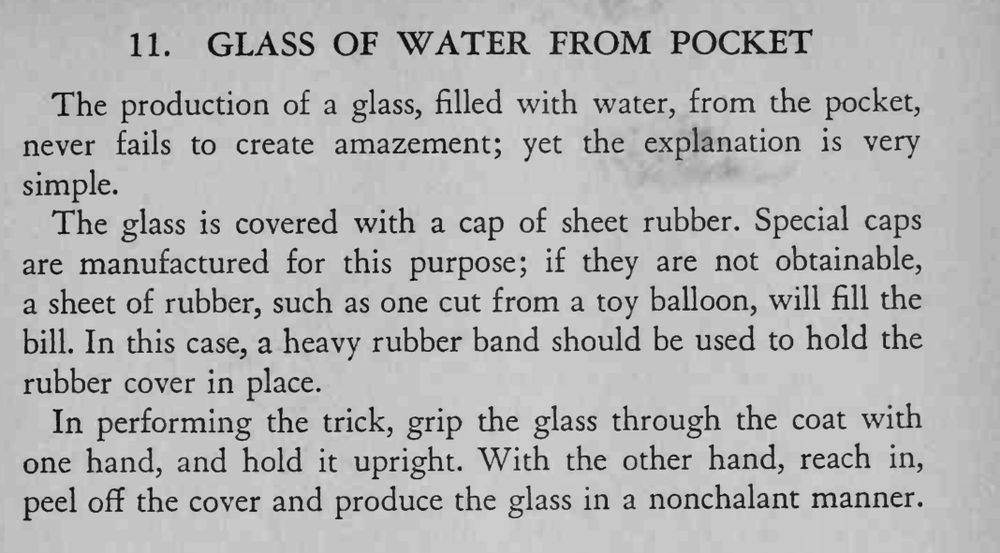

魔术师从外套口袋里掏出一只盛满水的玻璃杯，水一点都没洒。
全程不能让杯子倾斜，盖片揭下后更不能歪。

The production of a glass, filled with water, from the pocket, never fails to create amazement; yet the explanation is very simple. The glass is covered with a cap of sheet rubber. Special caps are manufactured for this purpose; if they are not obtainable, a sheet of rubber, such as one cut from a toy balloon, will fill the bill. In this case, a heavy rubber band should be used to hold the rubber cover in place. In performing the trick, grip the glass through the coat with one hand, and hold it upright. With the other hand, reach in, peel off the cover and produce the glass in a nonchalant manner.